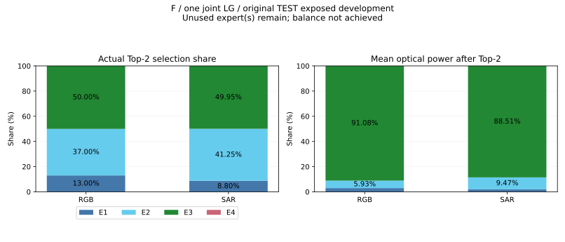

当前尚未均衡：{'RGB': [4], 'SAR': [4]}为各模态零选择专家。不能将归一化功率或联合平均当均衡。所有TEST值为ORIGINAL_TEST_EXPOSED_DEVELOPMENT。
每张图选两个专家。被选频率=选中图数/图数，四项合计200%，均衡参考各50%；选择次数占比=选中次数/(2×图数)，合计100%，均衡参考各25%。光功率份额是另一个指标，不代表负载频率。RGB与SAR分别检查，不能合并掩盖单域偏载；不要求每张图四路均匀。
同一模型SHA256：b6e0a73ed5cdcf8db9a6dfd6d63b7563030b41c6185c6ad447fa047a8dcd9403

| 划分 | 模态 | N | E1/E2/E3/E4被选频率 | 选择次数占比 | Top2后平均功率份额 | 选择熵/ln4 |
|---|---|---|---|---|---|---|
| train | RGB | 3000 | 18.70% / 81.30% / 100.00% / 0.00% | 9.35% / 40.65% / 50.00% / 0.00% | 2.10% / 6.41% / 91.48% / 0.00% | 0.674 |
| train | SAR | 3000 | 17.13% / 82.87% / 99.97% / 0.03% | 8.57% / 41.43% / 49.98% / 0.02% | 1.88% / 9.36% / 88.76% / 0.00% | 0.666 |
| val | RGB | 1000 | 18.40% / 81.60% / 100.00% / 0.00% | 9.20% / 40.80% / 50.00% / 0.00% | 2.01% / 6.39% / 91.61% / 0.00% | 0.672 |
| val | SAR | 1000 | 17.10% / 82.90% / 100.00% / 0.00% | 8.55% / 41.45% / 50.00% / 0.00% | 2.02% / 9.41% / 88.57% / 0.00% | 0.665 |
| test | RGB | 1000 | 26.00% / 74.00% / 100.00% / 0.00% | 13.00% / 37.00% / 50.00% / 0.00% | 2.99% / 5.93% / 91.08% / 0.00% | 0.707 |
| test | SAR | 1000 | 17.60% / 82.50% / 99.90% / 0.00% | 8.80% / 41.25% / 49.95% / 0.00% | 2.01% / 9.47% / 88.51% / 0.00% | 0.668 |
完整逐类统计、Top-2组合分布、有效专家数与SHA证据见JSON。后续训练需兼顾两域准确率与每域实际硬选择负载，保留原模型及失败；不固定域专家、不使用GT路由。